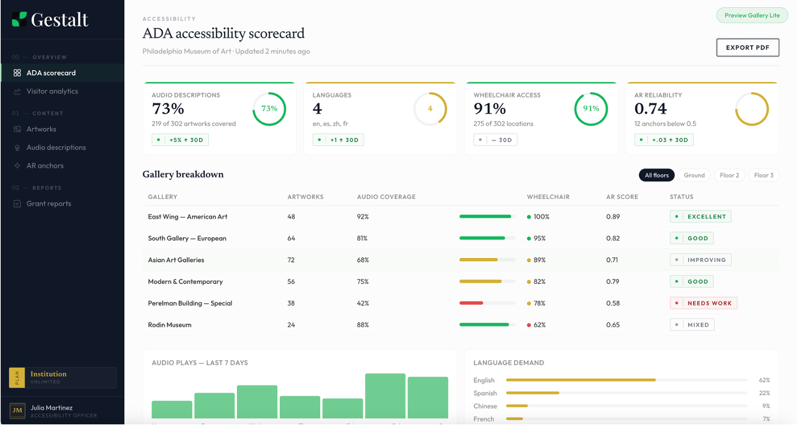

ADA compliance infrastructure for museums.
Gestalt helps museums generate, review, and deliver accessible experiences in days, not years. From AI audio descriptions to compliance analytics, audit logs, and visitor delivery on guests' own phones, we give institutions a turnkey path to accessibility without significant effort.

Why compliance has become urgent
- 2–3%
- of museum collections have audio descriptions
- $50–150
- cost per description when written by hand
Museums are under growing pressure to improve accessibility, but the traditional process does not scale. Writing descriptions one by one, coordinating review, recording narration, and updating content across changing exhibitions creates a backlog that most institutions never fully clear. Gestalt turns that backlog into an operational workflow your team can actually maintain.
From collection upload to compliant delivery
-
01
Upload your collection
Import artwork records by CSV or API. Gestalt uses your existing titles, artists, dates, and curatorial notes to create a structured accessibility workflow around the collection you already manage.
-
02
Generate descriptions at scale
Gestalt creates accessibility-ready audio description drafts in seconds, giving your team a fast starting point for every work instead of months of manual writing.
-
03
Review with your team
Curators and staff review, edit, and approve content in a purpose-built CMS. Keep institutional voice, maintain quality control, and document who approved what.
-
04
Publish, score, and document
Deliver descriptions to visitors on their own phones while tracking accessibility coverage, audit history, and reporting outputs for leadership, grants, and compliance reviews.
ADA-ready, grant-ready
Gestalt gives your institution a live view of accessibility progress. See which works are covered, where gaps remain, and how your collection is trending over time.
Compliance scorecards
Track description status across the full collection with live visibility into what is complete, in review, pending, or still missing.
Grant-ready documentation
Generate exportable reports for accessibility audits, funder updates, and internal reporting without assembling evidence manually.
Works on visitors' own phones
Forget device rentals, beacon installations, and charging stations. Gestalt runs on the smartphone visitors already carry, reducing deployment friction while keeping accessibility delivery simple for staff and dependable for guests.
One platform for galleries, campuses, and public art
Gestalt is built for museums first, but it also supports sculpture trails, campus collections, mural programs, and public art commissions. If your institution manages art in physical space, Gestalt helps structure and deliver accessibility across it.
Built for institutions of every size
Gallery Lite
For small galleries and emerging spaces. Up to 100 works, basic analytics, self-service onboarding.
Institution
For mid-size museums. Unlimited works, curatorial CMS, compliance reporting, dedicated onboarding.
Enterprise
For major museums and city-wide programs. Multi-venue support, API access, custom integrations, white-label options.
Talk to us
Every institution is different. Let's figure out what works for yours.
Schedule a demo
See Gestalt in action.
Schedule a demo to see how Gestalt can help your institution move from accessibility backlog to documented compliance.
Schedule a demo